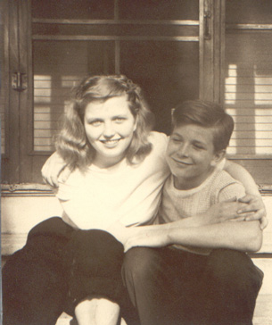

Wayne Omer Wogsland
1936 - ?
Wayne Omer Wogsland, born 29 January 1936, was the youngset child of Obert and Alice Wogsland. He married Carol Wiley Denzin, who had four children from a previous marriage. Wayne worked as a computer programmer. They live in Houston, TX.

Young Wayne with his older sister Sylvia.
Parents:
Alice Minerva Anderson
1902 - 1981
Obert Almer Wogsland
1902 - 1980
Offspring:
NONE
References:
1. Neal Wogsland
Last Modified: 11 June 2004 by
Brad Wogsland
.